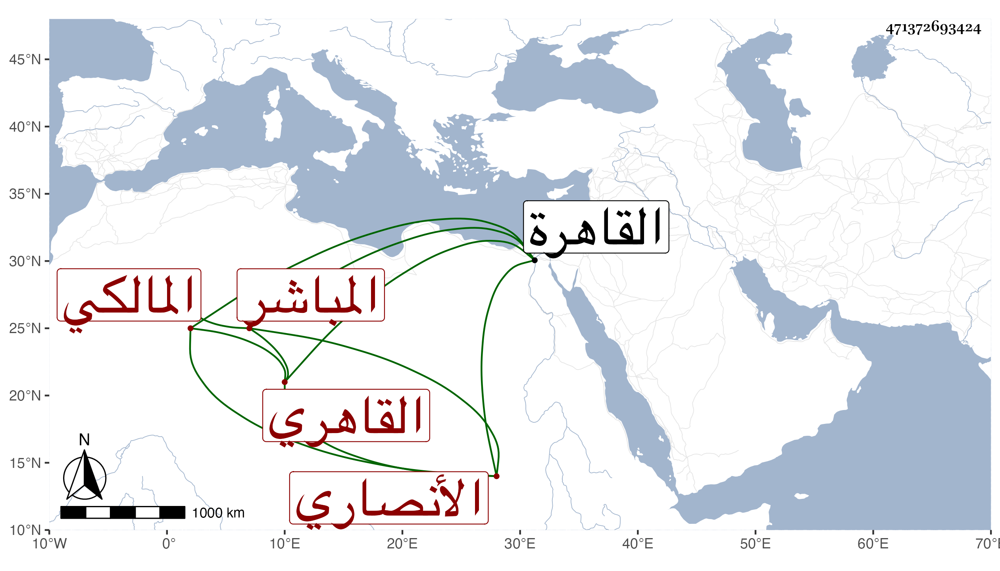

0902Sakhawi.DawLamic.ITO20230111-ara1.EIS1600.471372693424
Biography ID: 471372693424
585
عبد العزيز بن محمد بن عبد الله بن عبد العزيز البدر أبو محمد بن الشمس أبي عبد الله بن الرشيد أبي محمد بن العز أبي محمد الأنصاري القاهري المالكي المباشر الماضي ابنه أحمد ويعرف كسلفه بابن عبد العزيز . ولد قبل سنة ثمانين وسبعمائة تقريبا بالقاهرة ونشأ بها فحفظ القرآن والعمدة وعرضها في مستهل صفر سنة تسعين والرسالة وعرضها في ربيع الأول من التي بعدها وكان ممن عرض عليه الابناسي والبلقيني وابن الملقن وولد كل منهما وأجازوا له وأثنوا على أسلافه في آخرين ممن لم يجز وفي ظني أن عبد العزيز الأعلى هو جد القاضي كريم الدين عبد الكريم ابن أحمد بن عبد العزيز بن عبد الكريم بن أبي طالب بن عبد الله بن سيدهم ابن علي اللخمي ويتأيد بأن كريم الدين لما استقر في نظر الجيش رغب عما كان باسمه قبل من وظائف الجيش باسم والد صاحب الترجمة ووصفه بأنه قريبه لكن حكى لي الجمال سبط شيختنا أنس ابنة عبد الكريم المذكور أن القرابة إنما هي من جهة النساء وحينئذ فعبد العزيز الأعلى غير جد كريم الدين لا سيما ووجدت وصفه بالعالم المحدث في خط غير واحد وكذا نسبته أنصاريا وأما جد كريم الدين فهو وإن وقع في معجم ابن ظهيرة نسبة ولده الحسن أنصاريا فهو غلط ولذا كتب شيخنا بهامش ترجمته هناك صوابه اللخمي والله أعلم ، وقد سمع صاحب الترجمة على الشرف بن الكويك جزء البطاقة وباشر أوقاف جامع طولون والاشرفية العتيقة والناصرية دهرا ، وكان بارعا في المباشرة جلدا ثابت الجأش صبورا تعب القاياتي ثم السفطي في مباشرتهما القضاء بتسببه كثيرا ولم يحدث لكنه أجاز لي ومات في شعبان سنة ثمان وخمسين رحمه الله وعفا عنه .
